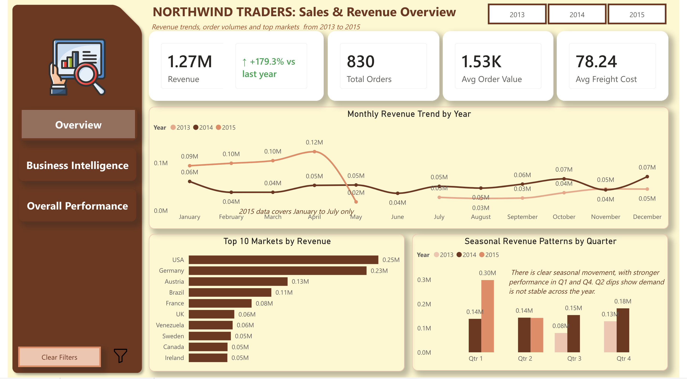
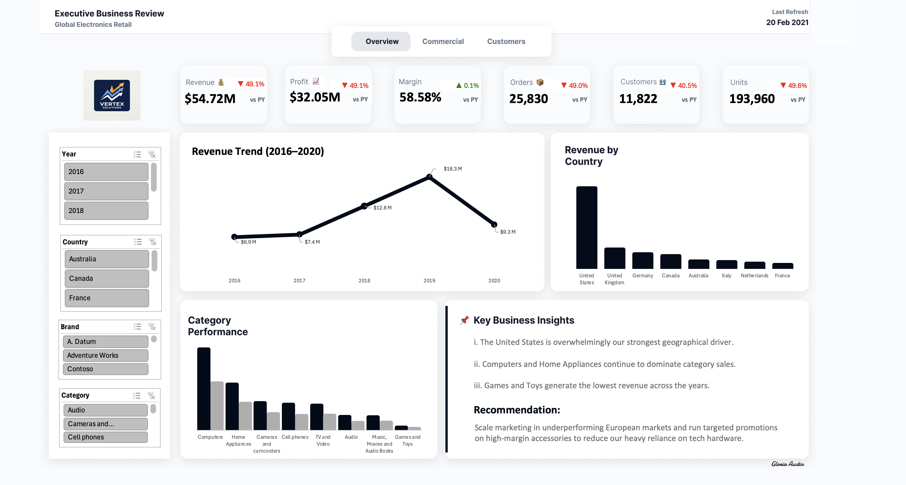
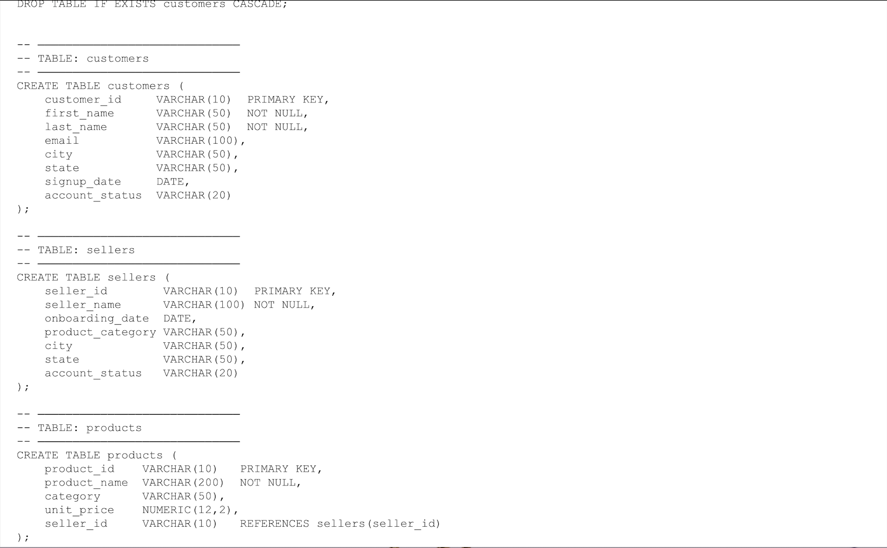
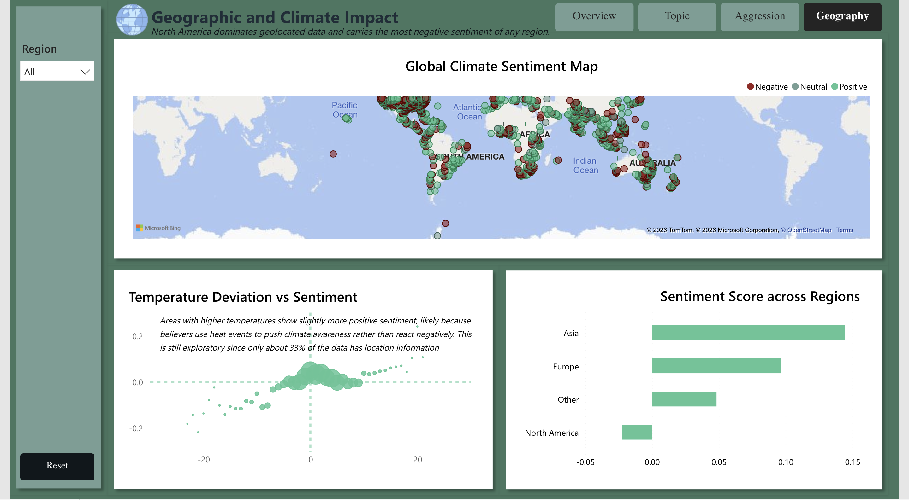
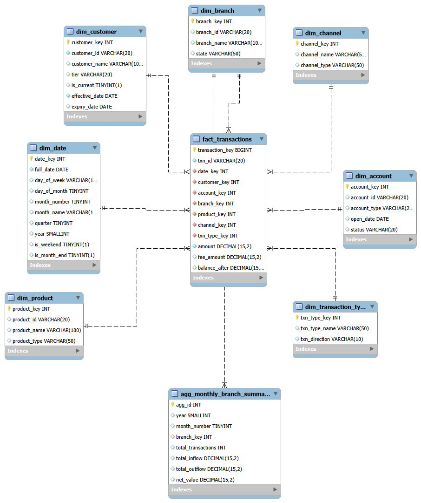
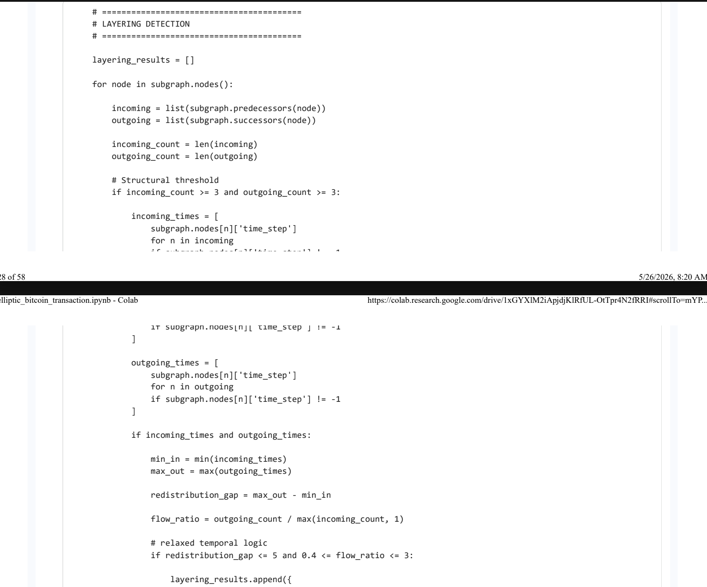
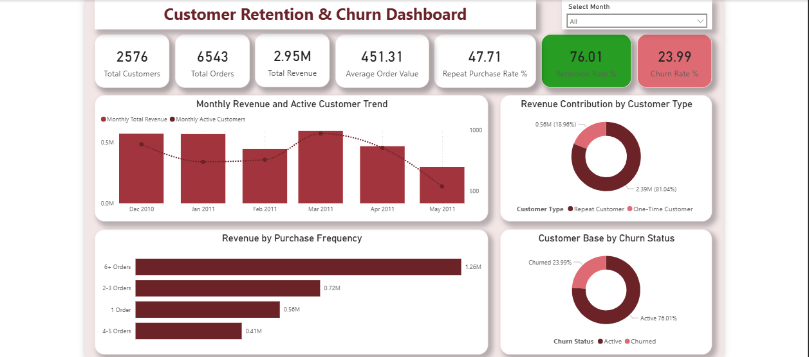
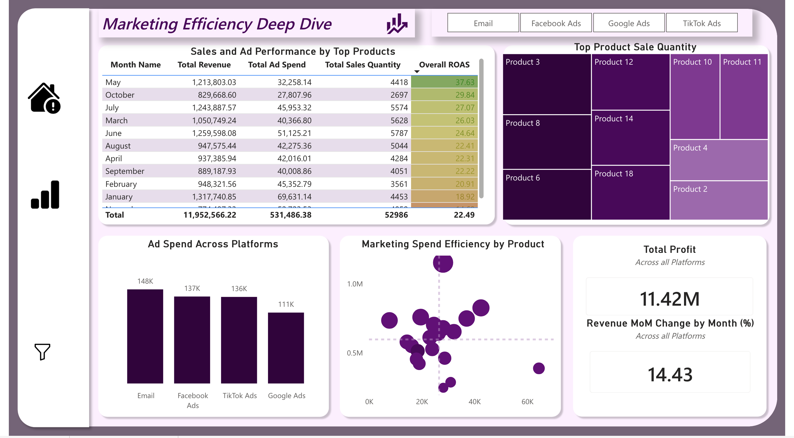
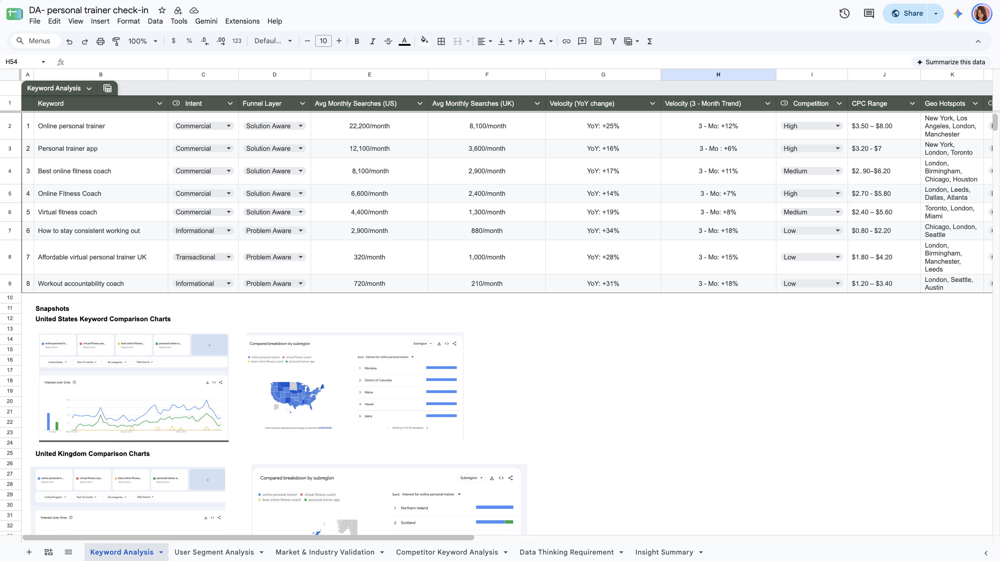

01BUSINESS INTELLIGENCE
Northwind Traders: Global Sales & Operations
Power BI report built on a relational trading dataset. Tracks revenue, product and customer performance, employee results and shipping by region.
BUSINESS INTELLIGENCE · DATA ANALYTICS
I am Gloria Austin, a Business Intelligence & Data Analyst with two years of experience in SQL, Power BI, Excel and Python. I clean and model data, build KPI dashboards and write up findings that sales, customer and operations teams can act on.
AT A GLANCE
SELECTED WORK

01BUSINESS INTELLIGENCE
Power BI report built on a relational trading dataset. Tracks revenue, product and customer performance, employee results and shipping by region.

02EXECUTIVE REPORTING
Excel executive dashboard built with Power Query and a data model. Interactive views track revenue, profit, customer and operations KPIs.

03DATA ANALYTICS
SQL analysis of an e-commerce business, covering customer acquisition, conversion, sellers, payments and order performance. Includes data-quality checks and recommendations.

04LARGE-SCALE ANALYTICS
Analysis of 15.7 million climate-related tweets, showing how sentiment, stance and aggression in public conversation changed over time.

05DATA MODELING
Dimensional model for banking transactions, with a transaction-grain fact table, seven dimensions, surrogate keys and slowly changing dimension logic.

06RISK & INVESTIGATIVE ANALYTICS
Network analysis of Bitcoin transactions. Graph structure, centrality measures and behavioral patterns flag potentially high-risk transaction structures.
MORE ANALYTICS WORK

07CUSTOMER ANALYTICS
Customer and order analysis covering retention, repeat purchases, churn risk and revenue contribution.

08SALES & MARKETING INTELLIGENCE
Interactive report on sales trends, marketing performance and campaign impact, with KPI monitoring.

09MARKET & PRODUCT RESEARCH
Market research for a personal trainer app, completed as Assistant Team Lead and data analyst on a cross-functional product team. Covers search demand, competitor gaps, target users and pivot signals.
HOW I WORK
I define the business question and the metric before I build any report.
Clarify the business question and the decision it supports.
Inspect, clean and structure the underlying data.
Investigate the question with SQL, statistical methods or BI tools.
Present findings as clear reports with specific recommendations.
EXPERIENCE
Dylte Beauty & Wellness · Lagos / Remote
HNG
Otsuka · NYSC
FOR GRADUATE ADMISSIONS
My academic work applies computational and statistical methods to biological data. Current projects cover transcriptomic analysis, ferroptosis, immune microenvironments, single-cell analysis and survival analysis.
EDUCATION
Landmark University, 2020–2024.
PUBLICATION
“Puerarin: A Stimulator of NRF-2 Against Oxidative Damage in Diseases.”
TOOLS
SQL · PostgreSQL · Power BI · DAX · Excel
Python · pandas
GSEApy · Scanpy · SciPy · statsmodels
Git · GitHub · VS Code · Google Colab
OPEN TO OPPORTUNITIES
I am open to Junior Data Analyst, Business Intelligence Analyst and Reporting Analyst roles, and to relevant graduate research opportunities.